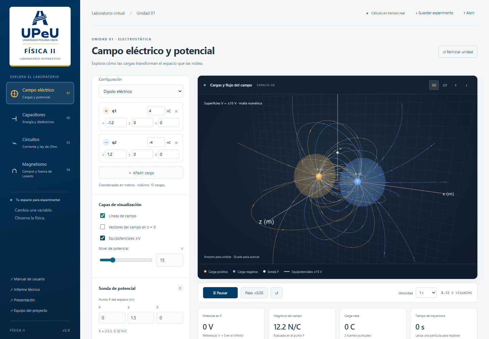
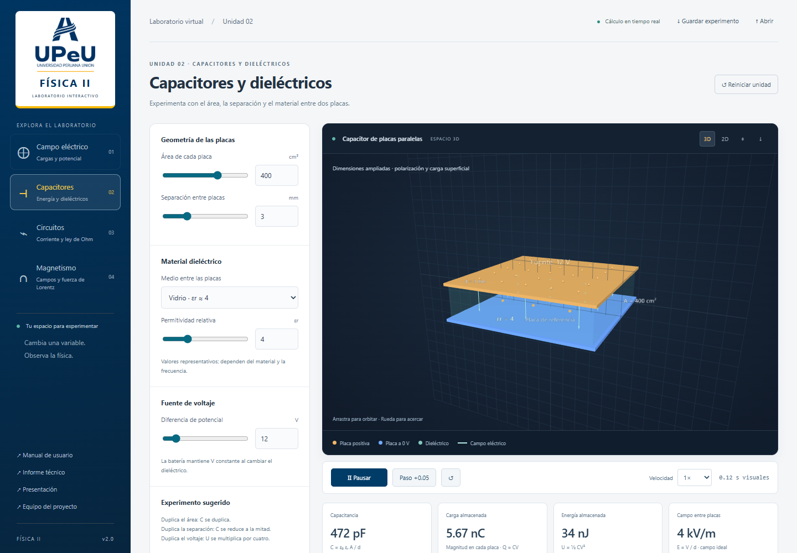
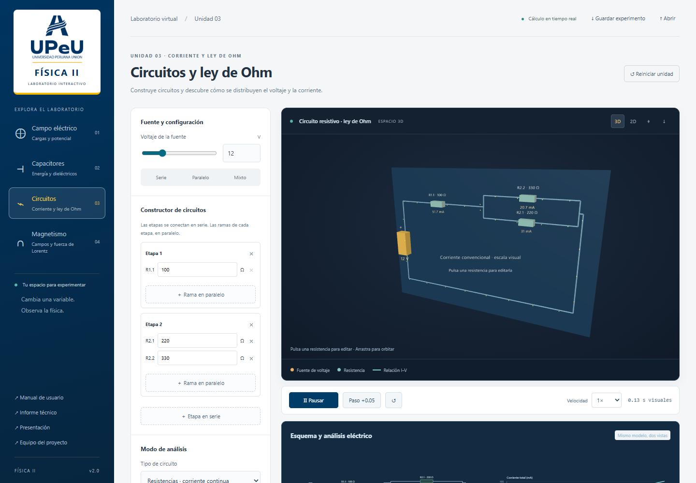
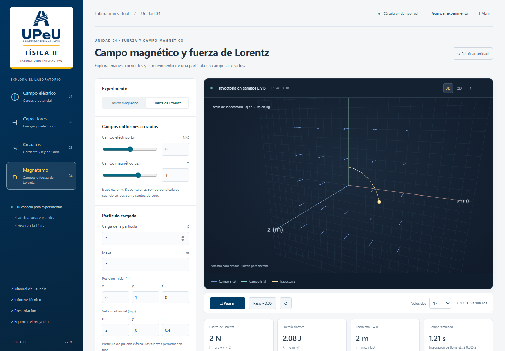

1. Primeros pasos
FLUX es un laboratorio web para observar campos, calcular magnitudes y contrastar predicciones. Abre la versión publicada o ejecútala en tu equipo. No necesita cuenta, servidor de datos ni conexión a servicios externos durante el uso.
Ejecución desde el código fuente
Instala Node.js 22 o posterior. Dentro de la carpeta del proyecto:
npm ci
npm run devAbre http://127.0.0.1:4173. Para comprobar la versión distribuible:
npm run build
npm startSi utilizas el paquete descargable de la entrega, descomprímelo, abre una terminal en esa carpeta y ejecuta node server.mjs. No abras index.html con doble clic: los módulos JavaScript necesitan HTTP.
Recomendado: navegador con WebGL 2 y aceleración gráfica. Se verificaron Chromium de escritorio y vistas de 390 y 768 píxeles. La vista móvil coloca la escena antes de los controles.
2. Controles comunes
- Menú lateral: selecciona una de las cuatro unidades. Cada unidad conserva sus parámetros mientras navegas.
- Controles: usa el deslizador o escribe un número dentro del rango. Un valor inválido no reemplaza el último valor válido.
- 3D: arrastra con el botón principal para orbitar; rueda para acercar; botón secundario para desplazar. En pantalla táctil, un dedo orbita y dos dedos acercan o desplazan.
- 2D: bloquea la cámara en la dirección z y presenta la vista XY. Las cargas con z distinto de cero se proyectan en esa vista. Las curvas equipotenciales se calculan específicamente en z = 0.
- ⌖: centra la cámara. ↓ en la escena guarda una captura PNG de la visualización.
- Reiniciar unidad: restaura sus valores iniciales y borra su trayectoria; las demás unidades conservan su estado.
Las tarjetas bajo la escena muestran resultados en SI, con prefijos como m, µ, n y p. Las flechas de los ejes indican orientación; las figuras no sustituyen la lectura numérica de la sonda.
Animaciones e interacción 3D
Las cuatro unidades disponen de una escena 3D animada. La barra bajo la escena permite pausar, reproducir, reiniciar y avanzar un paso de 0.05 segundos visuales. Puedes seleccionar velocidades 0.25×, 0.5×, 1× o 2×. Cada unidad conserva su propio reloj.
Tiempo visual y tiempo físico: los puntos luminosos de las líneas indican orientación. No representan cargas que viajan por el vacío ni una velocidad de propagación. En las trayectorias, el tiempo físico aparece en la tarjeta de resultados. En la carga del capacitor, la escena informa t y τ en segundos físicos.
Unidad 1 · Cargas y potencial
Arrastra una esfera cargada directamente en la escena. Se mueve sobre el plano XY que pasa por su coordenada z, con límites de ±4 m. Las líneas, superficies y sonda se recalculan. Las coordenadas también pueden editarse en el panel. Los trazadores luminosos siguen el sentido del campo; pausar congela la animación sin bloquear los parámetros.
Unidad 2 · Capacitores
La geometría cambia al modificar área o distancia. Los pares de colores del dieléctrico ilustran la orientación de dipolos. En «Carga RC en 3D», ajusta la resistencia en MΩ y pulsa «Iniciar carga». El recorrido muestra 0–5 constantes de tiempo con τ = RC. La capacitancia depende de la geometría, mientras Q, U y E se calculan con el voltaje instantáneo Vc. «Estado estable» vuelve al capacitor conectado a la tensión final.
Unidad 3 · Circuitos
La placa 3D representa la misma red que el esquema y la tabla inferiores. Los puntos amarillos ilustran corriente convencional. Su rapidez es visual y no equivale a la velocidad de deriva de electrones. Pulsa una resistencia 3D para enfocar su valor en el panel. Pulsa la fuente para apagarla o encenderla. Con V = 0 no circulan trazadores. Puedes orbitar, acercar y cambiar a vista XY.
Unidad 4 · Magnetismo
Los puntos verdes recorren las líneas de B. Cambia la fuente o invierte la corriente para observar el sentido. En Lorentz, configura la partícula y pulsa «Lanzar». La barra común controla la reproducción y el avance por pasos de la trayectoria. La velocidad inicial y el signo de q determinan el movimiento.
3. Cargas, potencial y trayectoria
- Selecciona Campo eléctrico y una configuración: carga aislada, dipolo, dos cargas positivas o cuadrupolo.
- Edita cada carga en nC y su posición x, y, z en metros. Añade o elimina fuentes hasta un máximo de diez. Una carga de 0 nC no genera campo.
- Activa líneas de campo, vectores o equipotenciales. El nivel define las superficies de potencial positivo y negativo. En 2D también aparece V = 0 cuando existe una frontera entre signos.
- Introduce las coordenadas de P para calcular V y las componentes de E. En una carga puntual no existe un resultado finito: cambia la posición de P.
- Abre Trayectoria de una partícula. Configura carga en µC, masa en mg, posición y velocidad. Pulsa Lanzar, Pausar o Borrar.
- Exporta el CSV para analizar tiempo, posición y velocidad. Las columnas incluyen unidades en sus nombres.

Experimento verificable
Selecciona una carga, fija q = 1 nC y P = (1, 0, 0) m. Obtendrás V ≈ 8.99 V y |E| ≈ 8.99 N/C. Al mover P a (2, 0, 0) m, V ≈ 4.49 V y |E| ≈ 2.25 N/C.
4. Capacitores y energía
Modifica área en cm², separación en mm, permitividad relativa y diferencia de potencial en V. El modelo supone placas paralelas, campo uniforme y batería conectada; V permanece constante al cambiar el material.
Con A = 200 cm², d = 3 mm, εr = 1 y V = 12 V: C ≈ 59.0 pF, Q ≈ 708 pC, U ≈ 4.25 nJ y E = 4 kV/m. Duplicar A duplica C. Duplicar d divide C entre dos. Duplicar V multiplica U por cuatro.
Los valores de los materiales son aproximaciones didácticas. La separación visual está ampliada; las fórmulas utilizan las dimensiones físicas que introduces.

5. Circuitos y ley de Ohm
El constructor admite hasta cuatro etapas en serie. Cada etapa contiene hasta cuatro resistencias en paralelo. Con una rama por etapa obtienes un circuito en serie; con una sola etapa y varias ramas obtienes uno en paralelo. La combinación produce circuitos mixtos.
- Selecciona un ejemplo o usa Añadir etapa y Rama en paralelo.
- Introduce resistencias positivas en Ω y el voltaje de la fuente.
- Lee R equivalente, corriente total, potencia y la tabla por resistencia.
- Observa la gráfica I–V; el punto destaca el voltaje seleccionado y su corriente.
Para el ejemplo mixto: 220 Ω || 330 Ω = 132 Ω; con 100 Ω en serie, R = 232 Ω. A 12 V, I ≈ 51.7 mA y P ≈ 0.621 W.
Circuito RC
Selecciona Resistencias + capacitor. El capacitor se conecta en serie con toda la red resistiva equivalente. Ajusta C en µF y el tiempo en unidades de τ = RC. En carga, Vc(0) = 0. En descarga, Vc(0) es el voltaje inicial elegido y la fuente se desconecta. La corriente negativa indica descarga respecto al sentido de carga.
Usa Animar proceso RC o el deslizador. En t = τ, Vc alcanza el 63.2 % durante la carga y conserva el 36.8 % durante la descarga. El gráfico, las tarjetas y la tabla muestran el mismo instante.

6. Campo magnético y Lorentz
Fuentes de campo
- Imán: dipolo ideal orientado sobre y. La intensidad se expresa como momento magnético, A·m². Al invertir el signo cambian los polos.
- Conductor: hilo infinito sobre z, corriente en A. Las líneas forman circunferencias alrededor del conductor.
- Espira: radio 1 m en el plano XY. El campo se calcula con Biot–Savart. Una corriente positiva circula en sentido antihorario vista desde +z.
La sonda permite evaluar |B| y sus componentes. Dentro de la fuente ideal o cerca del filamento se indica una zona excluida.
Fuerza de Lorentz
Cambia al modo Fuerza de Lorentz. Ey se expresa en N/C y Bz en teslas. Las unidades de la partícula en este modo son C y kg para mantener trayectorias visibles a escala de metros; no representan un electrón real.
Con E = 0, q = 1 C, m = 1 kg, Bz = 1 T y velocidad (2, 0, 0.4) m/s, aparece una hélice con radio 2 m y energía 2.08 J. Con vz = 0 se obtiene una circunferencia. Para verificar un selector de velocidades, usa Ey = 2 N/C, Bz = 1 T y v = (2, 0, 0) m/s: la fuerza neta es nula.

7. Guardar y compartir
Guardar experimento descarga un JSON con las cuatro unidades y la vista activa. Abrir restituye esos parámetros. El archivo no almacena una simulación en curso: vuelve a lanzar la partícula si necesitas regenerar la trayectoria.
Los experimentos no se envían a un servidor. Al cerrar o recargar, se restablecen los valores iniciales salvo que abras un JSON guardado. El importador verifica versión, tipos, cantidades y límites; rechaza archivos mayores de 200 kB.
El CSV incluye t_s, x_m, y_m, z_m, vx_m_s, vy_m_s y vz_m_s. Se toma una muestra cada tres pasos internos; el tiempo exacto de cada fila permite comparar trayectorias aunque el paso varíe.
Desde los enlaces laterales puedes abrir este manual, el informe y la presentación. En la presentación usa las flechas del teclado, los botones o F para pantalla completa; N alterna las notas del expositor.
8. Límites y solución de problemas
| Situación | Acción o interpretación |
|---|---|
| No aparece la escena 3D | Activa WebGL 2 y aceleración gráfica. Prueba un navegador actualizado. Las calculadoras y circuitos pueden seguir funcionando. |
| La aplicación no carga al abrir index.html | Ejecuta el servidor HTTP con npm run dev o node server.mjs en el paquete de entrega. |
| El campo o potencial indica «No definido» | La sonda está sobre una carga o dentro de una fuente excluida. Mueve P. |
| No veo una superficie equipotencial | Puede quedar fuera de la caja de muestreo de ±4 m, no existir para ese signo o corresponder a cargas demasiado pequeñas. Cambia el nivel. |
| La partícula se detiene | Alcanza una carga, sale del radio de 8 m, supera 30 s o llega al límite de muestras. Borra la trayectoria y cambia el experimento. |
| Las líneas cambian de densidad al rotar | Son una selección de curvas ilustrativas; su cantidad no mide flujo. Consulta los valores numéricos. |
| Quiero un puente de Wheatstone o un circuito de CA | El constructor resuelve redes reducibles mediante etapas serie/paralelo, CC y un capacitor equivalente en RC. No implementa circuitos arbitrarios ni CA. |
| Quiero entregar el manual como PDF | Usa Imprimir / guardar PDF. El estilo de impresión elimina los controles y conserva contenido y referencias. |
Equipo y presentación
Universidad Peruana Unión · Física II
Ingeniería Sistemas e Informática · 4to ciclo
Integrantes
- Omar Tineo
- Anthuanet Reynoso
- Moises Morales
Docente: Ramiro Manrique Rua
La presentación incluye ejemplos de las cuatro unidades, gráficas editables y notas para la exposición. Puedes abrirla desde el menú lateral o descargar el archivo PowerPoint.